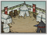

Requires
- Buildings: 
Basic Building Statistics (can be modified by difficulty level, arts, skills, traits and retainers)
- Cost: 1600
- -10% to the cost of recruiting all units in this province
- +1 armour for all units recruited in this province
Description
The empty scabbard is useless; beautiful lacquer mocks the owner.
An armoury centralises the supply of arms and armour, and guarantees that all equipment will be of a given quality. It is not just a store, but usually includes workshops for craftsmen to repair and create military items. It therefore improves the defensive strength of any unit recruited in the same province. Nearly all armies of the medieval period relied on looting the dead to provide weapons and equipment for the living. Sometimes this was even an organised business. This, however, was discovered by many to be a ramshackle way to run a war. By centralising armour under the control of noble families, they could also introduce a level of uniformity into their armies. A medieval European army would be a riot of colours, liveries and heraldry, while a Japanese army would have a calm uniformity to it. This has a practical benefit for a warrior: anyone not wearing the same armour as you in a battle is almost certainly an enemy!